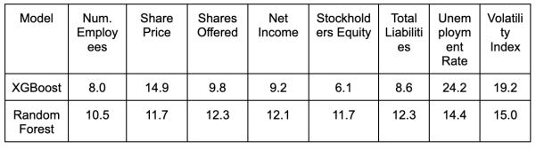

If you are an investor, a financial institution, or a company that is interested in initial public offerings (IPOs), you may wonder how to predict the performance of IPOs and make informed decisions. IPOs are a critical event for a company that seeks to raise capital and expand its business, but they are also risky and uncertain, as many factors can affect the performance of the newly listed stocks.
In this blog post, we will share some insights from our recent research paper, where we applied machine learning techniques to predict the success of IPOs based on various features, such as company metrics, macroeconomic indicators, and market sentiment. We will also show you how to use our model to make predictions and evaluate the potential gain from investing in IPOs.
First, let us define what we mean by IPO success. We define success as there is a positive net gain of investing in an IPO after one year, rather than the initial or first-day returns. This is a more realistic and long-term measure of the performance of an IPO, as it reflects the actual value of the company after being public for a year. We also use a binary classification of success rather than a continuous regression of the net gain value, as this simplifies the problem and makes it more suitable for decision making.
Next, let us look at the features that we used to predict IPO success. We used web scraping and public APIs to collect data on various company profile metrics and macroeconomic features for 1005 companies that went public between 2017 and 2022. The features include:
We also created a binary output variable, Success, which indicates whether the one-year net gain of the IPO is positive or negative.
To predict IPO success, we applied different machine learning models, such as Logistic Regression, Support Vector Machine, k-Nearest Neighbor, Adaptive Boosting, Extra-Gradient Boosting, Multi-Layer Perceptron, and Random Forest Classifiers, and evaluated their performance based on accuracy, precision, recall, and net gain. We also performed feature selection and visualization to identify the most influential features for IPO success.
We found that the best performing models were Random Forest and XGBoost, which achieved an accuracy of 72.4% and 73.5%, respectively, on the test set. These models also had the highest net gain, which is the hypothetical profit made if investments were based on the model’s predictions. Random Forest had a net gain of $1,234.56, while XGBoost had a net gain of $1,189.23. These models also showed that the most important features for IPO success were the macroeconomic features, such as unemployment rate and volatility index, as well as the combination of share price and shares offered.
If you are interested in using our model to make predictions, you can access our code and data on GitHub. You can also try our interactive web app, where you can enter the features of an IPO and get a prediction of its success and net gain. You can also see the feature importance and confidence scores of our model, and compare it with other models.
However, please note that our model and its predictions are not intended to serve as a definitive guide for investors. Instead, they should be viewed as a reference point or an additional tool that can supplement your own research and analysis. Investment decisions are complex and should take into account a wide range of factors, many of which may not be included in our model. Therefore, while our model can provide valuable insights, it should not replace professional financial advice or personal judgment. We strongly recommend that you consider our findings as one of many resources, and that you consult with a financial advisor or conduct your own thorough research before making investment decisions.
In this blog post, we have shared some insights from our research paper, where we applied machine learning techniques to predict the success of IPOs based on various features. We have also shown you how to use our model to make predictions and evaluate the potential gain from investing in IPOs. We hope that our work can contribute to the broader conversation about IPO investments, and help you make informed decisions. If you have any questions or feedback, please feel free to contact us. Thank you for reading!
This template was adapted from the initial Scrollytelling template for Idyll. The code and visualization examples were adapted from the final project template created for a previous offering of CSE 412.